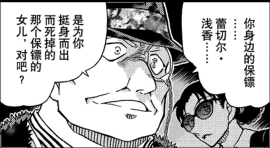
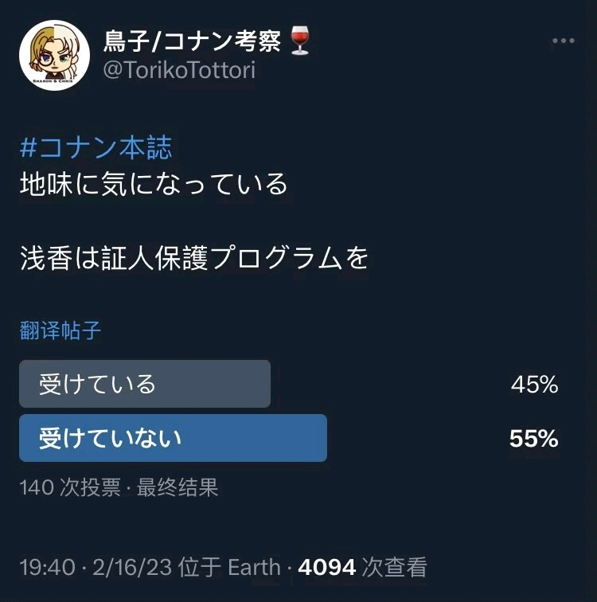
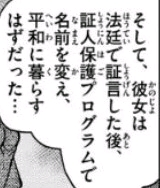
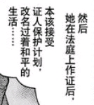
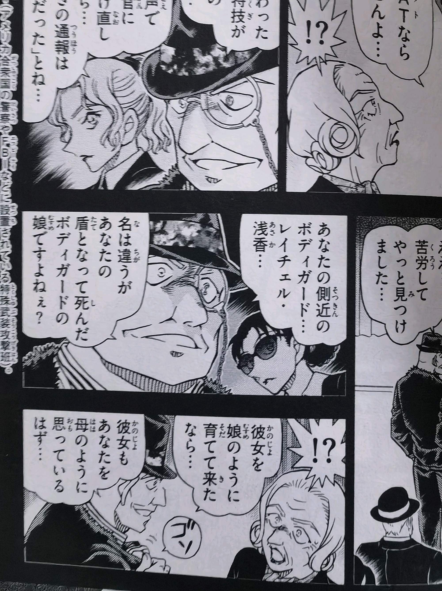
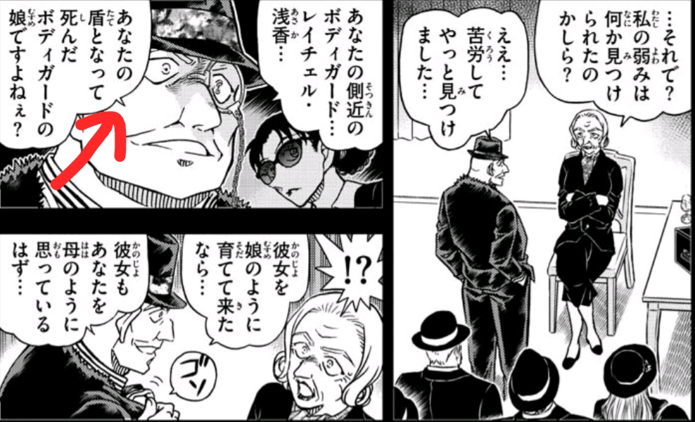

据这位po主，104卷单行本修正了一句台词

【你身边的保镖蕾切尔浅香，虽然名字不一样，但她就是那个保镖的女儿没错吧？】
也就是说蕾切尔浅香这个名字，和保镖女儿原来的名字还不一样
lz之前也观察到两种理解，有觉得接受了的（算上自己一开始的理解就3例，还有一个是po主），大部分认为浅香是真名，比例比这个投票小很多
用中文类比一下，大概是【小明和小李的爸爸】这种感觉
符合单行本修正的是前者，b漫的翻译，即我们现在认为的是后者
现在主要想确认，一个是句子的问题，一个是单行本修正
，不知道没有其他地方改了
虽然个人认为这个po主的思路不靠谱，不敢完全相信他的理解，但po的内容应该没问题，改动应该是存在的，而且浅香是否接受保护lz当时也存在同样的疑问，本来不了了之了……所以还是决定发出来讨论
这个问题非常重要，如果确定浅香不是真名，一些之前没法解释的东西就还有机会（如果搞错了就偷偷删掉x）

【是为你挺身而死的保镖的女儿对吧】前面加了个【虽然名字不一样】（暂时没有改后的图片）【你身边的保镖蕾切尔浅香，虽然名字不一样，但她就是那个保镖的女儿没错吧？】
也就是说蕾切尔浅香这个名字，和保镖女儿原来的名字还不一样

这个po主在1108话之后发过一个投票：浅香是否接受了证人保护，两个选项人数差不大lz之前也观察到两种理解，有觉得接受了的（算上自己一开始的理解就3例，还有一个是po主），大部分认为浅香是真名，比例比这个投票小很多

出现这种分歧以及修改，我觉得很可能是1106阿曼达的台词存在歧义，原句后两个短句可以拆开读，可以连起来读，也就有【通过证人保护改了名字，本应和平度日】和【本应通过证人保护计划改名和平度日】两种理解……用中文类比一下，大概是【小明和小李的爸爸】这种感觉
符合单行本修正的是前者，b漫的翻译，即我们现在认为的是后者

从语意上两种都可以，语法上不知道，有没有路过大佬解答一下对不对现在主要想确认，一个是句子的问题，一个是单行本修正，不知道没有其他地方改了
虽然个人认为这个po主的思路不靠谱，不敢完全相信他的理解，但po的内容应该没问题，改动应该是存在的，而且浅香是否接受保护lz当时也存在同样的疑问，本来不了了之了……所以还是决定发出来讨论
这个问题非常重要，如果确定浅香不是真名，一些之前没法解释的东西就还有机会（如果搞错了就偷偷删掉x）
占楼备用
2023-10-29 01:14 | 贴吧用户_J7eUEPR:回复 着实短了一点😂 :阿曼达和羽田浩司的对话里没有提到名字的事情哈，浩司可能不知道浅香叫什么；改名的事情还是围绕阿曼达和Rum的对话进行讨论的；其实也有人猜测过羽田浩司不是完全的局外人，他查几十年前的新闻、参加国际象棋大赛之类的行为也比较奇怪，他和阿曼达可能本来就有话要说2023-10-29 05:16 | 神爿魔肀:回复 着实短了一点😂 :在我占的楼里回复，这占得有什么意义
感觉浅香应该是证人保护计划之后的名字。因为fbi和mi6貌似都没有查到浅香的底细，如果是因为证人保护计划而查不到可以说得通。
2023-10-28 10:06 | 神爿魔肀:但是证人保护不就是FBI自己的项目吗……这也是之前我排除接受过保护的原因2023-10-28 10:24 | 和生🍀:回复 神爿魔肀 :记不清楚了，好像m24里的反派女就是接受了证人保护计划，然后赤井秀一也没查到她现在改成了什么名字2023-10-30 22:28 | 秋天下的屋檐:不过好像剧情里也没说过fbi到底对浅香知道多少。其实我觉得阿曼达家人完全不了解浅香这个人就很迷惑，浅香都跟阿曼达是母女情了，阿曼达家人却啥也不知道，感觉剧情不能细究
回复 和生🍀 :M24是因为是另一方（忘了叫啥了）不是FBI提供的证人保护计划，所以FBI查不到2023-11-27 02:36 | hdjgss:回复 和生🍀 :联邦法警（US MARSHALL）的证人保护计划
不是很理解，如果不是本名，那又有什么新说法？
2023-10-28 10:15 | 神爿魔肀:等于身世还没讲完2023-10-30 06:40 | 阿修罗七号:回复 神爿魔肀 :是说浅香的父母也可能和组织有点关系？
改名，但不是作为证人保护计划的改名。
主线女性现阶段红方这边朱蒂，水无，哀都是拒绝了证人保护计划的吧？
主线女性现阶段红方这边朱蒂，水无，哀都是拒绝了证人保护计划的吧？
2023-10-28 10:34 | 神爿魔肀:这样和不改名区别不大…… 朱蒂最终是接受了
前面是单行本，后面是连载版，的确多了名は違うが


2023-10-28 10:36 | 烧饼右京:所以我早就认为蕾切尔.浅香不是原名了，而且搞不好和白鸠舞子一样是变位词2023-10-28 10:45 | 神爿魔肀:回复 烧饼右京 :哇感谢，我看过有博主认为白鸠舞子就是对若狭留美的暗示，但是若狭留美的变位我觉得没有什么很合理的2023-10-30 06:42 | 阿修罗七号:回复 神爿魔肀 :浅香的母亲是日本人，父亲应该是美国人，可是她居然是姓日本姓氏，不知道是不是浅香是她母亲的名字，她把父亲的姓氏去掉了2023-10-30 06:43 | 烧饼右京:回复 阿修罗七号 :也有可能2023-11-27 02:39 | hdjgss:回复 神爿魔肀 :有可能是I'm Asaka,Rum.

应该可以解释阿曼达家人不知道浅香？保镖女儿应该是在亲人范围内公知的，改了名后自然就无人知晓这是保镖女儿了。吧。
2023-10-28 11:37 | 神爿魔肀:好像还是没法解释……阿曼达不是把她抚养大吗，但是家人都不知道为什么要雇佣她2023-10-28 11:58 | 小七已黑化✨:回复 神爿魔肀 :雇佣一个保镖明面上不需要理由吧，养了女儿肯定是大家都知道的，只是不知道养女变成了保镖浅香2023-10-28 12:50 | 神爿魔肀:回复 小七已黑化✨ :那也应该知道是养女，不会什么都不知道……2023-10-28 23:52 | 小七已黑化✨:回复 神爿魔肀 :知道有养女，但是只知道养女真实姓名，不知道养女是他们一无所知的浅香这个人吧？
所以跳舞的小人案会不会是暗示浅香的父母，浅香的外祖父是乌丸莲耶，浅香的母亲讨厌组织，嫁给阿曼达的保镖，结果被组织的人清算了
2023-11-04 00:23 | 陶乐西😁:感觉若狭不是那么重要的人物，她应该和乌丸没那么大的关系吧倒是贝姐比她更重要。2023-11-25 10:45 | 贴吧用户_7PX2yAy:有可能说的通，这样可能和贝姐有点血缘了；但也不一定是这个组织，也可能是与这个组织抗衡的对家的人？
浅香是阿曼达养女应该没有问题，两人私下里就是母女相称的；羽田浩司之前见过几次阿曼达，但从语气来很像是第一次见到浅香（阿曼达没和浩司说过浅香的名字，浩司直到死前也没叫过浅香的名字），浅香的装束确实是保镖，但羽田浩司还是问了一句“她……是保镖对吧？”，阿曼达只答复【她是以前一个保镖的女儿，现在也是保镖】，浩司应该是没有信这个说法，下一话见到浅香的时候直接断言【阿曼达有危险，但她想优先保证这个“保镖”的安全】；
Rum说过他是花费了“千辛万苦”才确定【①蕾切尔浅香是以前一个保镖的女儿，②现在明面上也是保镖，③实际上和阿曼达感情如同母女】。对比阿曼达和羽田浩司的对话，推测②是对外公开说法（阿曼达身边的人都知道），①是可以对羽田浩司说的（阿曼达身边的人疑似不知道，但如果主动问的话也许也是可以说的）；③才是阿曼达重点想隐瞒的事情，被点破了之后一瞬间真的有些惊恐。
这里猜测，浅香是不久之前才入职当保镖的，在阿曼达身边的人眼中就是突然雇了一个身份神秘的保镖，羽田浩司之前也没见过她；也因为之前的影像资料比较少，哪怕有超能力Rum调查起来也很困难。而且Rum应该只是确信①②，不是特别确信③，对话中用的是推测语气，认为浅香应该会来救阿曼达；但因为一直没找到、没见到浅香，其实是和推测③产生了矛盾；从Chianti的话来看，组织对浅香的认识又变成了【扔下雇主独自躲起来逃命的胆小鬼保镖】，显然是不太相信之前的推测③了；女王之谋篇失败的狙击更强化了组织眼中浅香这种自私到底的形象。
Rum说过他是花费了“千辛万苦”才确定【①蕾切尔浅香是以前一个保镖的女儿，②现在明面上也是保镖，③实际上和阿曼达感情如同母女】。对比阿曼达和羽田浩司的对话，推测②是对外公开说法（阿曼达身边的人都知道），①是可以对羽田浩司说的（阿曼达身边的人疑似不知道，但如果主动问的话也许也是可以说的）；③才是阿曼达重点想隐瞒的事情，被点破了之后一瞬间真的有些惊恐。
这里猜测，浅香是不久之前才入职当保镖的，在阿曼达身边的人眼中就是突然雇了一个身份神秘的保镖，羽田浩司之前也没见过她；也因为之前的影像资料比较少，哪怕有超能力Rum调查起来也很困难。而且Rum应该只是确信①②，不是特别确信③，对话中用的是推测语气，认为浅香应该会来救阿曼达；但因为一直没找到、没见到浅香，其实是和推测③产生了矛盾；从Chianti的话来看，组织对浅香的认识又变成了【扔下雇主独自躲起来逃命的胆小鬼保镖】，显然是不太相信之前的推测③了；女王之谋篇失败的狙击更强化了组织眼中浅香这种自私到底的形象。
就我个人而言，是赞同【浅香接受过证人保护计划】这一种说法的，浅香之前十几年应该是在远离阿曼达身边的地方生活的，甚至根本就不叫蕾切尔浅香这个名字；阿曼达在FBI有关系，知道浅香接受证人保护计划之后的信息，也经常去看她，两人私下里真的情如母女，但两人的接触明面上是打着别的活动的幌子，所以FBI和黑衣组织都不知道或不确信二人的母女关系。Rum可能是用超能力看破了明面上名字不一样的两个女孩是同一人，才猜测保镖浅香实际上阿曼达的养女。
蕾切尔浅香是不是原本的真名不太好说，我倾向于不是；如果按阿曼达的说法，浅香的母亲是日本人，随了母姓，那可能真的有过一个父姓真名（代表保镖的女儿，对应推测①）、一个假名（接受证人保护计划之后取的，对应推测③）、以及母姓公开名字蕾切尔浅香（代表她的保镖身份，对应推测②）。
至于阿曼达为什么要隐藏和浅香的母女关系，那猜测就比较多了，简单的复杂的都有。比如：【阿曼达不想让别人，尤其是黑衣组织知道浅香是她的软肋】【浅香的亲生父母有别的秘密，不仅仅是个保镖，所以阿曼达有很多事情要瞒着FBI等红方】【阿曼达可能没有亲生子女（其他软肋），视浅香为唯一的女儿，但正式承认这个女儿会引发遗产分割问题，只能假借保镖的名义把浅香留在自己身边】
蕾切尔浅香是不是原本的真名不太好说，我倾向于不是；如果按阿曼达的说法，浅香的母亲是日本人，随了母姓，那可能真的有过一个父姓真名（代表保镖的女儿，对应推测①）、一个假名（接受证人保护计划之后取的，对应推测③）、以及母姓公开名字蕾切尔浅香（代表她的保镖身份，对应推测②）。
至于阿曼达为什么要隐藏和浅香的母女关系，那猜测就比较多了，简单的复杂的都有。比如：【阿曼达不想让别人，尤其是黑衣组织知道浅香是她的软肋】【浅香的亲生父母有别的秘密，不仅仅是个保镖，所以阿曼达有很多事情要瞒着FBI等红方】【阿曼达可能没有亲生子女（其他软肋），视浅香为唯一的女儿，但正式承认这个女儿会引发遗产分割问题，只能假借保镖的名义把浅香留在自己身边】
浅香身上还没填的坑主要还是和阿曼达、阿曼达葬礼之后的事情有关；至于浅香父母的问题，有创作空间，但作者不填应该也没有太大问题；她和朱蒂的情况还不太一样，如果阿曼达的说法为真，那杀害浅香亲生父亲的凶手已经被送上法庭了，小浅香是因为出庭作证才接受了证人保护计划，这部分的故事线是比较完整的；如果求简单的话，杀父凶手可以和黑衣组织没有关系，仅是个背景人物也说得通
2023-10-29 05:25 | 神爿魔肀:确实，这个故事基本完整，之后重点肯定在羽案后的事，务武，艾莲娜，应该没什么多余笔墨又回头写父母2023-10-30 06:45 | 阿修罗七号:我也觉得老贼不会在浅香的父母身上做文章了，因为他写的浅香远没有我想的复杂，后面就是她和55的事了，还有这17年她是如何逃脱朗姆的追捕的
那搞了半天，这身世还没有介绍完整
 感觉在下个若狭回之前，哪种情况都是一样的讨论不出结果（早已放弃思考）
感觉在下个若狭回之前，哪种情况都是一样的讨论不出结果（早已放弃思考）我觉得大小银弹和工藤优作都确定若狭是浅香了，说明这名字就是真的，不必想太多
2023-10-30 13:18 | 烧饼右京:肯定是真名，但不一定是原名
现在若狭还有条a药名单/宫野夫妇线完全没揭露。说不定乌丸薇论还没死绝呢
2023-10-30 22:49 | 神爿魔肀:嘛，提出者自己都不信了吧
其实不是多大个事情，可能就是因为Amanda那句台词存在歧义，为了消除歧义73找了个有空余的位置补了这句话，来进一步确认浅香不是本名罢了；换句话说就是她确实接受了证人保护计划
非要说有什么值得挖掘的那就是这句台词一改基本坐实了73之后会写浅香爹的故事而已，至于这个爹到底是什么身份，现在这个阶段是没得猜的，一点线索没有
非要说有什么值得挖掘的那就是这句台词一改基本坐实了73之后会写浅香爹的故事而已，至于这个爹到底是什么身份，现在这个阶段是没得猜的，一点线索没有
可能为避免浅香孤身一人，到时候给她在日本拉点亲戚，也可能把她跟伊森本堂扯上关系？毕竟伊森本堂也是在美日裔二世，30年前加入CIA的时间点也跟浅香父亲去世时间差不多能对上？浅香求阿曼达时看起来是小学生的年纪
2023-11-27 02:54 | hdjgss:如果真跟本堂家扯上关系，那就是本堂瑛佑告诉她柯南是工藤新一2023-12-01 09:11 | 暖爱Bekayue:阿曼达和FBI还有CIA关系都不错的，没准浅香也真和这两个组织有点关系，如果她和基尔认识，那么名单的事就能理解了，她去找柯南（基尔告诉她这个男孩靠得住）又意外发现灰原也能理解了
因为阿曼达的背景还没有交代完，可以作为伏笔使用。毕竟证人保护计划也有门槛，普通凶杀案的证人几乎可以说没有资格参与，即使被刺杀的对象是富商。阿曼达有能力替浅香安排，说明她肯定有相关的人脉，加上后来她成为总统候选人的情况来看，她真正的身份应该不止富商那么简单，而是很可能跟某些部门有关有一定执政经验（像川普那样不曾从政直接当总统的例子在米国不算常见）。也许阿曼达的这个未揭露的身份能解释为什么她有能力隐瞒家族里的人暗中扶养浅香长大。